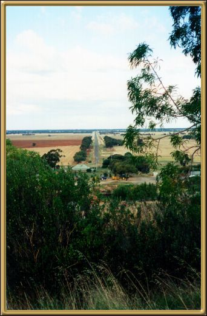
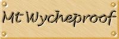

Mt Wycheproof is just behind the town of Wycheproof and is apparently the smallest listed mountain in the world. The view from here gives a fair impression of much of the interior of Victoria.
Photographer: Jean Stokes